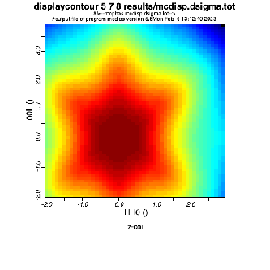

Next: Diffuse Scattering Up: mcdisp - the Calculation Previous: example of input file Contents Index
[displaybubbles ] produces a plot of the calculated dispersion on screen, which is automatically updated when the file changes. In contrast to the normal display program the radius of the symbols is increased according to the values of a radius column (in our case intensity column in file mcdisp.qui). Use as displaybubbles xcol ycol rcol filename - i.e. for displaying the dispersion along h type displaybubbles 5 8 9 mcdisp.qei. [displaycontour] displays contour plot of scattering intensity - use as displaycontour xcol ycol zcol filename - i.e. for displaying the intensity versus hk type displaycontour 5 6 8 mcdisp.dsigma.tot (see fig. 12) [spectrum] reads mcdisp.qom or mcdisp.dsigma and produces spectrum as an xy file, use as spectrum h k l filename [display_densities] produces an animation of the oscillation of spin, magmoments, chargedensity,... see also section 17.3 and appendix M.3.
|

|